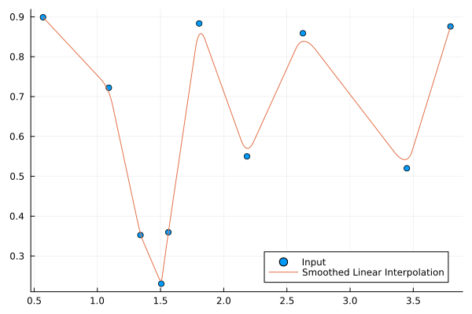

using SmoothInterpolation
u = rand(10)
t = cumsum(rand(10))
itp = SmoothedLinearInterpolation(u, t; extrapolate = true)
SmoothedLinearInterpolation with 10 points
┌──────────┬──────────┐
│ time │ u │
├──────────┼──────────┤
│ 0.570199 │ 0.898901 │
│ 1.09097 │ 0.722093 │
│ 1.34126 │ 0.352522 │
│ 1.50584 │ 0.230493 │
│ 1.562 │ 0.359622 │
│ 1.80602 │ 0.883354 │
│ 2.18398 │ 0.549894 │
│ 2.62664 │ 0.858798 │
│ 3.44906 │ 0.520043 │
│ 3.79432 │ 0.875899 │
└──────────┴──────────┘
using Plots
scatter(itp.t, itp.u, label = "Input")
plot!(itp, label = "Smoothed Linear Interpolation")
using ColorSchemes
t = [0, 1, 2, 2.5, 3, 3.5, 4]
u = Float64[-1, 1, -1, 0, 1, 0, -1]
pl = plot()
scatter!(t, u, label = "Input", legend = :top)
N = 101
Λ = range(0, 1, length = N)
colors = cgrad(:jet, range(0, 1, length = N))
for (i, (λ, color)) in enumerate(zip(Λ, colors))
itp = SmoothedLinearInterpolation(u, t; λ)
label = i % 10 == 1 ? "λ = $λ" : nothing
plot!(itp; label, color)
end
pl